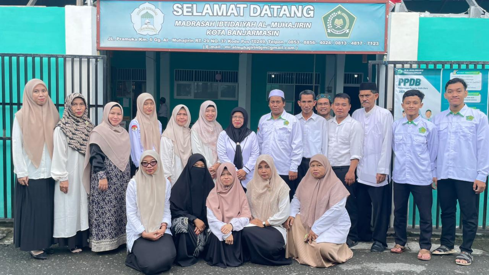

Akhlakul Karimah
Membentuk peserta didik yang beriman, jujur, disiplin, bertanggung jawab, santun dan peduli terhadap sesama.
Selamat Datang di
Madrasah Berakhlak, Prestasi, dan Terampil
Membangun generasi yang berakhlakul karimah, berilmu pengetahuan, berprestasi, serta mampu memanfaatkan teknologi untuk menghadapi masa depan.
Akreditasi Madrasah
Peserta Didik
Pendidik dan Tenaga Pendidik
Berdiri Sejak

MIS Al Muhajirin merupakan Madrasah Ibtidaiyah yang berada di Kota Banjarmasin dan hadir sebagai lembaga pendidikan Islam untuk membentuk peserta didik yang berilmu, beriman, berakhlak mulia, serta memiliki keterampilan menghadapi perkembangan zaman.
Madrasah tidak hanya berorientasi pada pencapaian akademik, tetapi juga menanamkan nilai keislaman, karakter, kebersamaan, kepedulian lingkungan, serta keterampilan peserta didik.
Pendidikan yang memadukan nilai keislaman, pengetahuan, karakter, keterampilan dan teknologi.
Membentuk peserta didik yang beriman, jujur, disiplin, bertanggung jawab, santun dan peduli terhadap sesama.
Mengembangkan potensi akademik maupun nonakademik melalui pembelajaran dan kegiatan pengembangan diri.
Membiasakan peserta didik membaca, mempelajari dan mencintai Al-Qur'an sejak usia dini.
Mempersiapkan peserta didik agar mampu memanfaatkan teknologi secara bijak dan bertanggung jawab.
Nilai cinta menjadi bagian dari pembentukan karakter dan kehidupan peserta didik di madrasah.
Menumbuhkan kecintaan terhadap Al-Qur'an melalui kegiatan membaca, menghafal dan pembiasaan.
Membentuk kedisiplinan, kepemimpinan, kemandirian dan tanggung jawab peserta didik.
Pembiasaan ibadah serta kegiatan Habsyi dan Muhadharah sebagai penguatan karakter Islami.
Mengembangkan minat dan bakat melalui futsal, basket, voli dan bulu tangkis.
Nilai karakter yang ditanamkan untuk membentuk pribadi yang berakhlak, tangguh dan bertanggung jawab.
Wujudkan pendidikan dasar yang memadukan ilmu pengetahuan, keterampilan dan nilai-nilai Islam.